Vineyard · Lower Beeding
Leonardslee Gardens House
A wedding weekend at the house on the Leonardslee estate, with its gardens, lakes and vineyards: Friday dinner, the wedding on Saturday and breakfast…
- Up to 100 guests
- Rooms on site
- Exclusive use